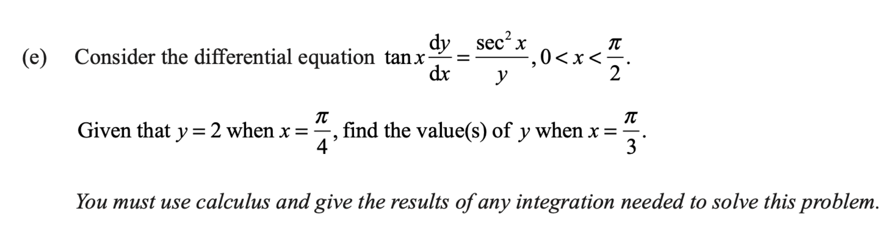

Level 3 Integration Walkthrough
2020 NCEA Level 3 Integration Question 1(e)
2020 Paper
Question

Consider the differential equation \(\tan x\,\frac{dy}{dx}=\frac{\sec^2x}{y}\), where \(0<x<\frac{\pi}{2}\).
Given that \(y=2\) when \(x=\frac{\pi}{4}\), find the value or values of \(y\) when \(x=\frac{\pi}{3}\).
You must use calculus and give the results of any integration needed to solve this problem.
First walkthrough idea
Focus to try first
Separate \(x\) and \(y\), integrate \(\frac{\sec^2x}{\tan x}\) as \(\ln|\tan x|\), then use the initial condition.
Step 1
Separate and integrate
Move \(y\) to the left and divide by \(\tan x\) before integrating.
Show the first step’s working
Walkthrough overview
What this question practises
This 2020 walkthrough is part of AS91579 — Apply integration methods in solving problems.
Method: Separating a logarithmic trigonometric differential equation.
This is Question 1(e) from the 2020 NCEA Level 3 Integration paper for AS91579 — Apply integration methods in solving problems. Use the guided hints to practise the method before revealing the full working.
Calc.nz is an independent learning resource. Compare questions, diagrams, and assessment information with the official NZQA resources for AS91579.
Page updated .
Learning summary
Review the method, not only the answer
This walkthrough helps you practise separating a logarithmic trigonometric differential equation. Use the hints to plan the method, then repeat the question without hints and check each step.
Common mistake to avoid
Keep logarithm domain restrictions and any inner-function factor visible throughout the working.
Continue practising
- All 2020 Integration walkthroughs
- All AS91579 Integration years
- Practise more questions using this skill: Differential equations